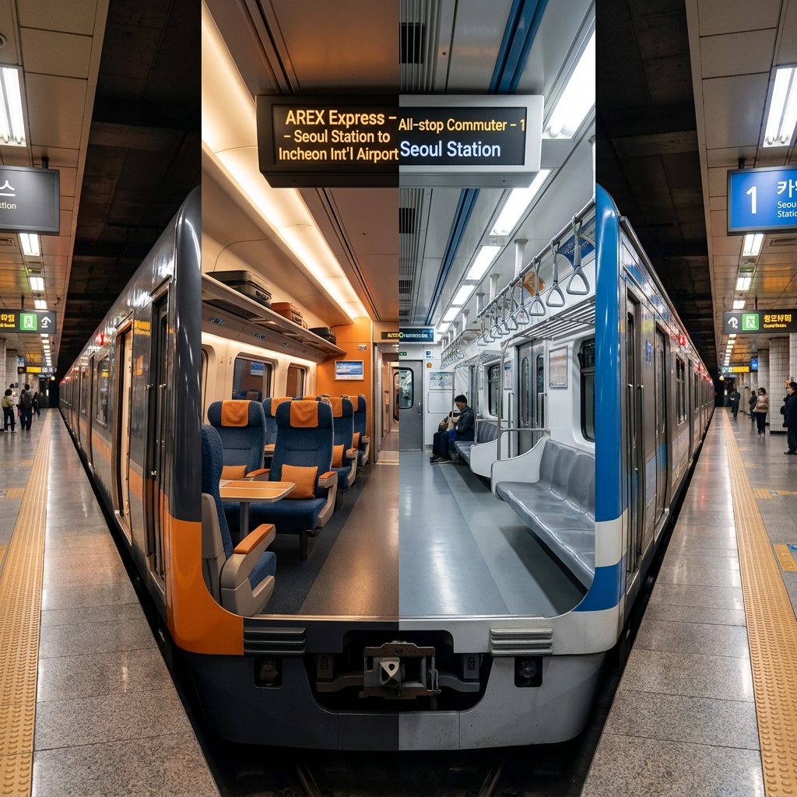
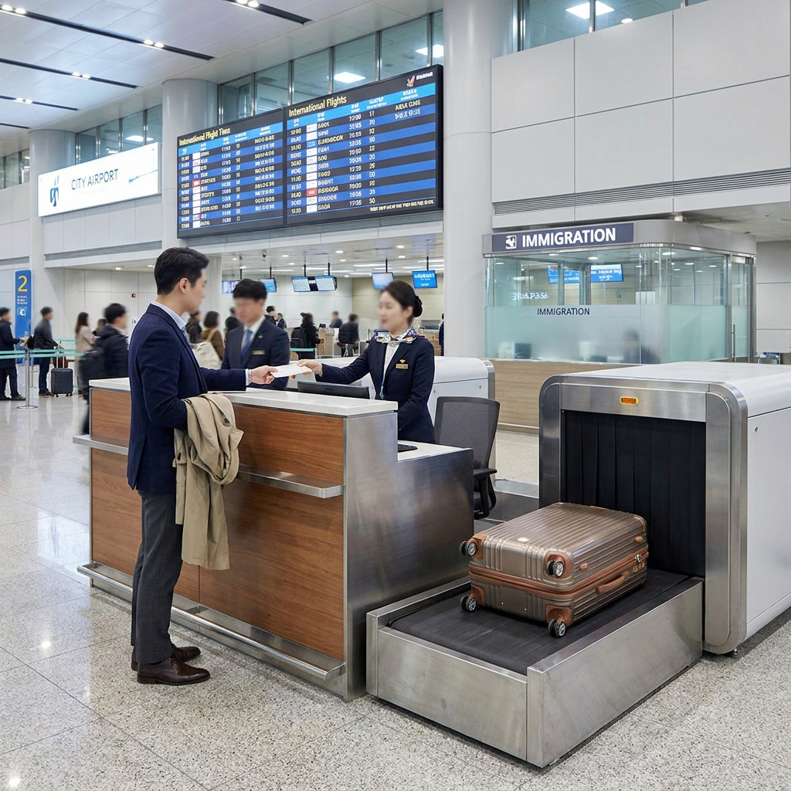

공항철도 직통열차 vs 일반열차 요금과 소요시간 비교 — 서울역 도심공항터미널 이용 조건과 예매 팁
서울역에서 인천국제공항까지 이동할 때 공항철도는 교통 체증 없이 가장 정시성을 보장받을 수 있는 대표적인 대중교통입니다. 공항철도는 서울역과 인천공항을 무정차로 직결하는 '직통열차(Express Train)'와 14개 전 역에 모두 정차하는 '일반열차(All-stop Train)' 두 가지로 나뉘어 운행됩니다.
두 열차는 요금과 소요시간뿐만 아니라 좌석 형태, 환승 할인 혜택, 그리고 서울역 도심공항터미널 이용 가능 여부에서 결정적인 차이가 납니다. 오늘 포스팅에서는 직통열차와 일반열차의 구간별 요금·소요시간 정밀 비교표, 서울역 도심공항터미널 사전 탑승수속(얼리 체크인) 조건과 가능 항공사 체크리스트, 예매 할인 팁까지 명쾌하게 비교해 드립니다.

공항철도 오렌지빛 직통열차와 일반 전동열차의 객실 구조 및 플랫폼 비교 / AI 제작 이미지
01 | 공항철도 직통열차와 일반열차의 근본적인 차이점
공항철도 직통열차와 일반열차는 같은 선로를 달리지만 차량의 설계와 서비스 목적 자체가 완전히 다릅니다. 일반열차가 수도권 지하철과 연계되는 출퇴근용 통근 전동차라면, 직통열차는 공항 이용객만을 위한 프리미엄 급행 열차입니다.
가장 눈에 띄는 차이는 내부 좌석 구조입니다. 직통열차는 KTX나 우등고속버스와 같은 2열-2열 배열의 리클라이닝 좌석(등받이 조절 가능)으로 구성되어 있으며 전 좌석 지정좌석제로 운영됩니다. 차내 무료 고속 와이파이, 생수 제공, 열차 승무원 탑승 등 항공기 수준의 편의 서비스를 제공합니다.
반면 일반열차는 일반 지하철과 동일한 롱시트(옆으로 나란히 앉는 좌석) 구조로 운영되며 별도의 좌석 지정 없이 입석으로 자유롭게 승차합니다. 캐리어를 든 여행객과 일반 통근 승객이 함께 섞여 이동하게 됩니다.
02 | 서울역~인천공항 구간별 소요시간과 정차역 완벽 비교표
출국 시간이 촉박한 여행자에게 몇 분의 시간 차이는 항공기 탑승 여부를 결정짓는 중대한 변수가 됩니다. 두 열차의 정차역 수와 공식 운행 소요시간을 비교해 드립니다.
| 구분 |
직통열차 (Express) |
일반열차 (All-stop) |
비고 및 차이점 |
| 운행 구간 |
서울역 ↔ 인천공항 T1 / T2 무정차 |
서울역 ↔ 인천공항 T2 (14개 역 전역 정차) |
직통은 중간 정차역 없음 |
| 인천공항 T1 소요시간 |
약 43분 |
약 59분 |
직통열차가 약 16분 단축 |
| 인천공항 T2 소요시간 |
약 51분 |
약 66분 |
직통열차가 약 15분 단축 |
| 배차 간격 |
약 35분 ~ 45분 |
약 5분 ~ 15분 |
일반열차가 배차 간격 훨씬 조밀 |
| 승차 방식 |
지정좌석제 (승차권 별도 구매) |
자율 입석 (선착순 착석) |
수도권 통합환승 할인 유무 |
단순 소요시간만 보면 직통열차가 약 15~16분 빠릅니다. 하지만 직통열차는 배차 간격이 40분 안팎으로 긴 편이므로, 서울역에 도착했을 때 바로 탈 수 있는 직통열차가 없다면 다음 일반열차를 타는 것이 인천공항에 더 일찍 도착할 수도 있습니다.
03 | 2026년 기준 편도 운임 요금과 환승 할인 적용 여부
요금 체계 역시 두 열차가 완전히 다르게 책정되어 있습니다. 2026년 현재 기준 정상 편도 운임은 다음과 같습니다.
직통열차의 정상 운임은 성인 기준 편도 11,000원(어린이 7,500원)입니다. 직통열차는 독립된 요금제 시스템을 적용받기 때문에 수도권 대중교통(지하철·버스)과의 환승 할인이 적용되지 않습니다.
반면 일반열차는 수도권 대중교통 통합 환승 요금제가 적용됩니다. 서울역에서 인천공항 제1여객터미널까지는 약 4,450원, 제2여객터미널까지는 약 5,050원입니다. 시내버스나 지하철에서 공항철도로 갈아탈 때 환승 할인이 적용되어 기본요금을 중복 지불하지 않습니다.

서울역 지하 2층 도심공항터미널에서 사전 탑승수속과 수하물 위탁을 진행하는 승객 / AI 제작 이미지
04 | 서울역 도심공항터미널 사전 탑승수속(얼리 체크인) 이용 조건
직통열차가 요금 차이에도 불구하고 여행자들에게 압도적인 선택을 받는 가장 결정적인 이유는 바로 '서울역 도심공항터미널 무료 이용 권한' 때문입니다.
서울역 지하 2층에 위치한 도심공항터미널은 오직 당일 공항철도 직통열차 승차권을 소지한 승객만 입장할 수 있습니다. 일반열차 이용객이나 지하철 승객은 도심공항터미널 내부의 탑승수속 및 수하물 위탁 카운터를 원천적으로 이용할 수 없습니다.
출국 당일 아침에 서울역에서 무거운 대형 캐리어를 미리 부치고, 탑승권 발급과 출국심사까지 끝낸 뒤 맨몸으로 서울 시내 관광을 즐기거나 편안하게 공항으로 이동할 수 있다는 점은 직통열차 요금 11,000원을 상쇄하고도 남는 막강한 혜택입니다.
05 | 도심공항터미널 수탁 수하물 부치기 및 출국심사 시간 단축 혜택
도심공항터미널을 이용하면 인천공항 현장에서 겪게 되는 극심한 대기 시간(체크인 줄, 수하물 위탁 줄, 보안검색 대기 줄)을 최소 1시간 이상 획기적으로 줄일 수 있습니다.
도심공항터미널 이용 시 출국 동선 단축 3단계
1. 서울역에서 수하물 위탁: 항공사 카운터에서 캐리어를 부치면 목적지 해외 공항까지 자동으로 운송됩니다.
2. 법무부 출입국관리사무소 사전 출국심사: 카운터 바로 옆 출국심사 부스에서 2~3분 만에 여권 심사를 마칩니다.
3. 인천공항 전용 출국통로(Fast Track) 이용: 인천공항 도착 후 일반 출국 대기열(수백 명 대기)에 서지 않고, 승무원 및 도심공항 이용객 전용 사이드 게이트로 즉시 입장합니다.
이로 인해 인천공항에 도착해서는 긴 줄을 설 필요 없이 면세구역으로 곧바로 진입하여 면세품 인도장이나 항공사 라운지를 여유롭게 즐길 수 있습니다.
06 | 탑승 수속 가능 항공사 목록과 당일 마감 시간 체크리스트
도심공항터미널을 이용하기 전 반드시 확인해야 할 점은 본인이 탑승하는 항공사가 서울역 수속 지원 항공사인지 여부와 수속 마감 시간입니다.
| 구분 |
제1여객터미널 (T1) 운항사 |
제2여객터미널 (T2) 운항사 |
수속 마감 시간 |
| 탑승수속 가능 항공사 |
아시아나항공, 제주항공, 티웨이항공, 이스타항공, 에어서울, 에어부산 |
대한항공, 진에어 |
항공기 출발 3시간 전 (T1)
항공기 출발 3시간 20분 전 (T2) |
| 운영 시간 |
탑승수속 및 수하물 위탁: 05:20 ~ 19:00 |
출국심사 운영: 07:00 ~ 19:00 |
공동운항편(코드셰어)은 실제 운항사 기준 확인 필수 |
외국 국적 외항사(싱가포르항공, 캐세이퍼시픽, 에미레이트 등)는 현재 서울역 도심공항터미널 수속을 지원하지 않으므로 인천공항 현장 카운터에서 수속해야 합니다. 또한 수속 마감 시간이 항공기 출발 기준 3시간~3시간 20분 전으로 엄격히 제한되므로 서울역에 넉넉히 일찍 도착해야 합니다.
07 | 직통열차 온라인 예매 할인 팁과 모바일 QR 탑승권 발급 방법
직통열차는 정가인 11,000원을 다 내고 타는 것보다 제휴 할인이나 사전 온라인 예매를 활용하면 20~30% 이상 저렴하게 이용할 수 있습니다.
직통열차 운임 할인 받는 3가지 방법
- 공항철도 공식 모바일 앱 / 웹사이트 예매: 회원 가입 및 사전 예매 시 기본 할인(약 9,500원~10,000원) 제공.
- 항공사 제휴 및 KTX 연계 환승 할인: 당일 KTX 승차권 소지자, 제휴 항공사 이용객은 현장 매표소 또는 사전 연동 시 약 9,000원에 발권 가능.
- 여행 플랫폼(클룩, 와그, 트립닷컴 등) 모바일 바우처: 상시 특가로 8,000원대 중후반에 구매한 뒤, 받은 핀(PIN) 번호를 공항철도 예약 사이트에 입력하여 원하는 시간대의 좌석과 QR코드를 지정.
예약 후 발급받은 모바일 QR코드는 캡처해 두거나 스마트폰 지갑 앱에 저장해 두면 직통열차 전용 게이트에 태그하고 1초 만에 통과할 수 있습니다.
08 | 일반열차 탑승 시 출퇴근 혼잡도와 캐리어 보관 요령
일반열차를 이용할 계획이라면 평일 출퇴근 시간대의 지옥철 혼잡도를 반드시 감안해야 합니다. 공항철도 일반열차는 마포, 공덕, 홍대입구, 디지털미디어시티, 김포공항 등 서울의 주요 환승 거점을 통과하기 때문입니다.
평일 오전 7시 30분~9시 사이나 저녁 18시~19시 30분 사이에 서울역에서 일반열차를 탈 경우, 대형 28인치 캐리어를 끌고 승차하면 통근 승객들과 엉켜 큰 불편을 겪을 수 있습니다.
일반열차를 타야 한다면 열차의 맨 앞 칸(1호차)이나 맨 뒤 칸(6호차)에 탑승하시는 것이 휠체어·자전거 거치 공간과 여유 공간이 있어 캐리어를 세워두기에 유리합니다.
09 | 인천공항 제1여객터미널 vs 제2여객터미널 도착 층과 터미널 이동법
공항철도는 제1여객터미널(T1)을 먼저 거쳐 종점인 제2여객터미널(T2)까지 운행합니다. T1과 T2 사이의 이동 시간은 열차로 약 6~8분 정도 소요됩니다.
열차에서 하차한 후 역 건물에서 공항 출국장(3층)까지 이동하는 동선도 확인해야 합니다. 공항철도 교통센터에서 여객터미널 3층 출국장까지는 완만한 무빙워크와 엘리베이터로 연결되어 있으며, 도보로 약 7~10분 정도 걸립니다.
만약 터미널을 잘못 내렸을 경우(T1에서 내려야 하는데 T2로 갔거나 그 반대인 경우), 두 터미널 사이를 오가는 무료 순환 셔틀버스를 타야 하며 이동에만 15~20분이 추가 소요되므로 본인의 항공권 터미널 번호를 출발 전 반드시 확인하시기 바랍니다.
10 | 상황별 최적의 선택 가이드 — 나에게 맞는 열차는 직통인가 일반인가
마지막으로 여행자의 상황에 따라 어떤 열차를 선택하는 것이 가장 합리적인지 핵심 가이드를 제시해 드립니다.
상황별 추천 열차 선택 공식
- 직통열차 추천 대상: 도심공항터미널 사전 체크인이 가능한 국적기 탑승객, 24인치 이상 무거운 수하물이 2개 이상인 여행객, 부모님이나 어린 자녀를 동반한 가족, 환승 없이 서울역에서 공항으로 바로 출발하는 경우.
- 일반열차 추천 대상: 홍대입구·공덕·김포공항 등 중간역에서 승차하는 승객, 수도권 지하철 환승 할인을 받아 교통비를 최소화하고 싶은 1인 배낭 여행자, 외항사를 이용하여 서울역 수속이 불가능한 승객.
자신의 출발 위치, 항공사, 그리고 짐의 무게를 종합적으로 고려하여 직통열차와 일반열차 중 가장 스트레스 없는 스마트한 공항 이동 수단을 선택하시기 바랍니다.
📌 함께 읽으면 좋은 가을 나들이 & 생활 팁
#공항철도직통열차
#공항철도일반열차
#공항철도요금비교
#서울역도심공항터미널
#도심공항터미널수속
#인천공항소요시간
#직통열차예매할인
#도심공항터미널항공사
#서울역인천공항철도
#공항철도환승할인